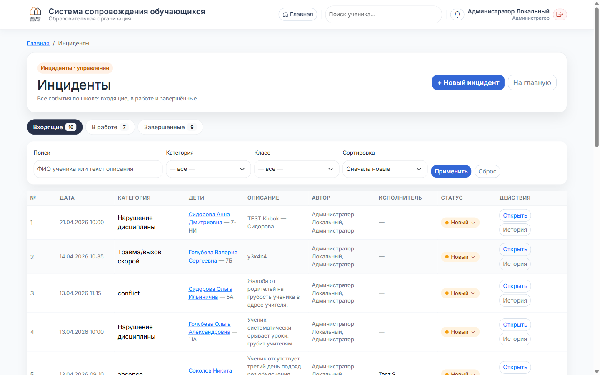
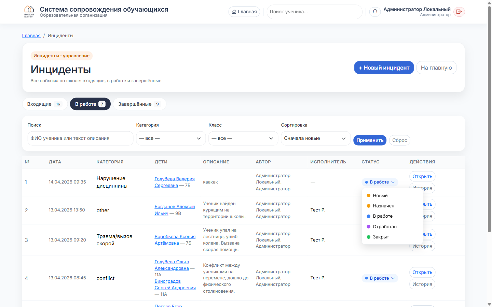
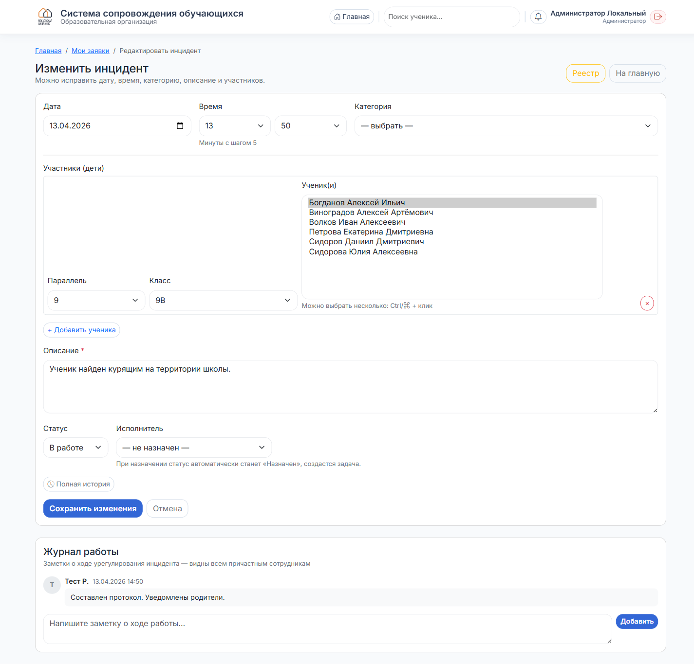
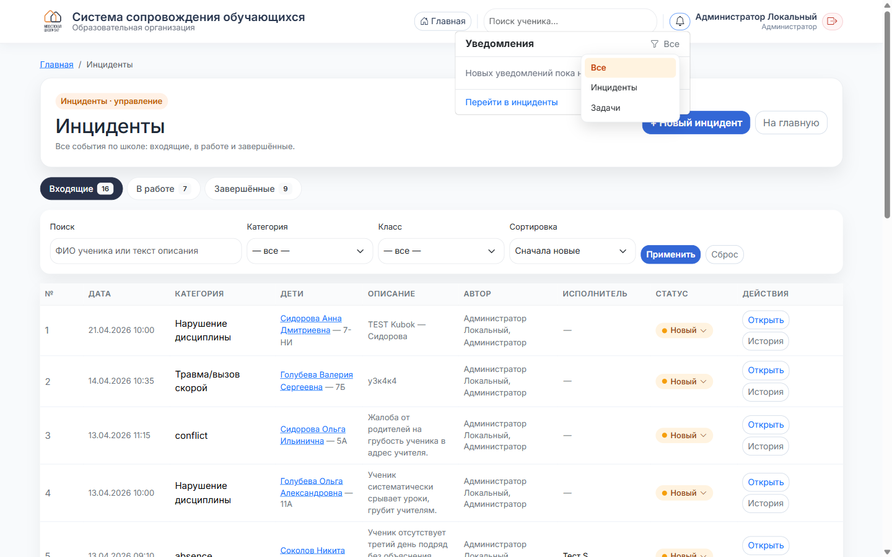
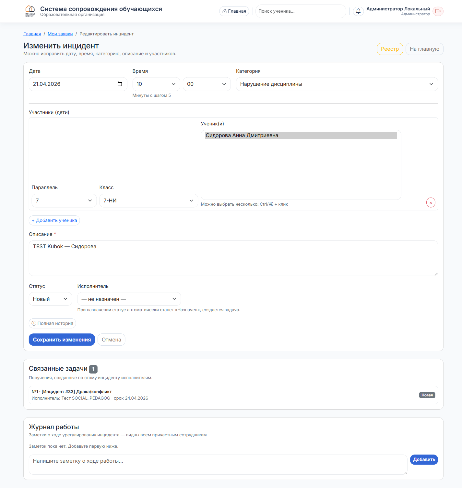

Работа с инцидентами
Полный цикл: входящие → назначение → работа → завершение. Статусы, задачи, уведомления.
Где открыть — плитка «Инциденты»
На главной, в блоке «Быстрые действия», плитка «Инциденты» с описанием «Входящие, в работе и завершённые». Откроется страница /incidents/my в административном виде.
Три вкладки: Входящие / В работе / Завершённые

- Входящие — статус «Новый». Свежие заявки, которым ещё не назначен исполнитель. Требуют вашего внимания в первую очередь.
- В работе — статусы «Назначен» и «В работе». Задача уже у исполнителя, идёт урегулирование.
- Завершённые — «Отработан» и «Закрыт». Отработан исполнителем либо закрыт вами окончательно.
Число в каждой пилюле — общее количество инцидентов в этом состоянии.
Фильтры и сортировка
Под вкладками — панель фильтров:
- Поиск — по ФИО ученика или по тексту описания. Регистр не имеет значения.
- Категория — травма, драка, буллинг, нарушение дисциплины и др.
- Класс — оставляет только инциденты с учениками выбранного класса.
- Сортировка: сначала новые / сначала старые / по категории / по статусу.
Нажмите «Применить» — фильтры сохранятся в URL, можно переключаться между вкладками не теряя их. Кнопка «Сброс» обнуляет все фильтры на текущей вкладке.
Пять статусов инцидента

В столбце «Статус» у каждой строки — пилюля с текущим статусом. Клик открывает дроп-даун:
- ● Новый — только зарегистрирован, ещё никому не назначен.
- ● Назначен — вы выбрали исполнителя. Статус выставляется автоматически.
- ● В работе — исполнитель взял в работу.
- ● Отработан — исполнитель нажал «Я отработал» (ждёт вашей проверки).
- ● Закрыт — вы закрыли окончательно, инцидент уходит в архив.
Карточка инцидента — назначение исполнителя

Кнопка «Открыть» в строке таблицы или в действиях открывает карточку. Внутри:
- Дата/время, категория, участники (дети), описание — редактируются.
- Статус — выпадающий список из 5 значений.
- Исполнитель — выпадающий список сотрудников (ADMIN, DEPUTY_DIRECTOR, PSYCHOLOGIST, SOCIAL_PEDAGOG, METHODIST, CLASS_TEACHER, TEACHER). Выбрать — сохранить.
- Полная история — кнопка перехода к таймлайну: кто менял статус, кому передавался, когда.
- Журнал работы внизу — заметки по ходу (видят автор, исполнитель, управляющие).
При сохранении формы:
- Если назначили исполнителя, а статус был «Новый» — автоматически сменится на «Назначен».
- Если сняли исполнителя («не назначен») — статус вернётся в «Новый».
- Если исполнитель с ролью PSY / SOC / METH — автоматически создастся задача в модуле «Задачи и поручения» (см. шаг 7).
- Автору инцидента и новому исполнителю упадут уведомления (см. шаг 6).
Уведомления — колокольчик в шапке

Красный счётчик на колокольчике — это сумма непрочитанных по инцидентам + по задачам. Клик открывает выпадающее окно.
Внутри — иконка воронки справа от заголовка. При клике всплывает подменю:
- Все — оба потока сразу.
- Инциденты — только уведомления о инцидентах (назначен исполнитель, сменён статус, добавлена заметка).
- Задачи — только уведомления о задачах (новая задача, смена исполнителя, просрочка).
Клик по уведомлению в списке — оно отмечается прочитанным и счётчик уменьшается. Ссылка в футере «Перейти в инциденты / задачи» ведёт в соответствующий раздел (ссылка меняется в зависимости от выбранного фильтра). Кнопка «Прочитать» рядом — отмечает всё в активном типе прочитанным.
- Автору инцидента — при назначении исполнителя и при смене статуса.
- Исполнителю — при назначении, при смене статуса, при заметках.
- Администраторам — при новых инцидентах и при событиях «Отработан» (требуют проверки).
Связка с задачами — Task ↔ Incident

Когда вы назначаете инциденту исполнителя из служб (PSY / SOC / METH), система сама создаёт задачу:
- Название —
[Инцидент #N] Категория - Описание — копия описания инцидента + ссылка.
- Ответственный — тот же сотрудник, что и исполнитель инцидента.
- Срок — по умолчанию +3 дня (можно отредактировать в карточке задачи).
При переназначении — меняется responsible у той же задачи (повторного дубля не будет), если она ещё не закрыта. Если задача уже «Выполнена/Закрыта» — создастся новая.
Связь показывается в двух местах:
- В карточке инцидента внизу — блок «Связанные задачи» со списком: №, название, исполнитель, срок, статус.
- В карточке задачи под заголовком — оранжевая плашка «Задача создана из инцидента #N · категория» со ссылкой на инцидент.

Типичный сценарий работы (день админа)
- Зашли на главную — смотрите счётчики за сегодня (инциденты / травмы / скорая / дисциплина).
- Колокольчик — если есть красная цифра, смотрите что произошло: новые инциденты, отработанные задачи, заметки.
- Плитка «Инциденты» → вкладка «Входящие»: назначаете исполнителя каждому новому инциденту (автоматически создастся задача и уйдут уведомления).
- Вкладка «В работе»: контролируете прогресс, читаете заметки в журнале работы, общаетесь с исполнителем через заметки.
- Когда исполнитель пометит инцидент «Отработан» — вы получаете уведомление. Проверяете, что сделано (журнал работы, связанная задача, результат) и вручную ставите статус «Закрыт».
- Вкладка «Завершённые» — архив для отчётности.
incident_add). Перед удалением — убедитесь, что это ошибочная запись, а не «сгоревший» инцидент: лучше закрыть «Закрыт», чтобы сохранилась статистика.